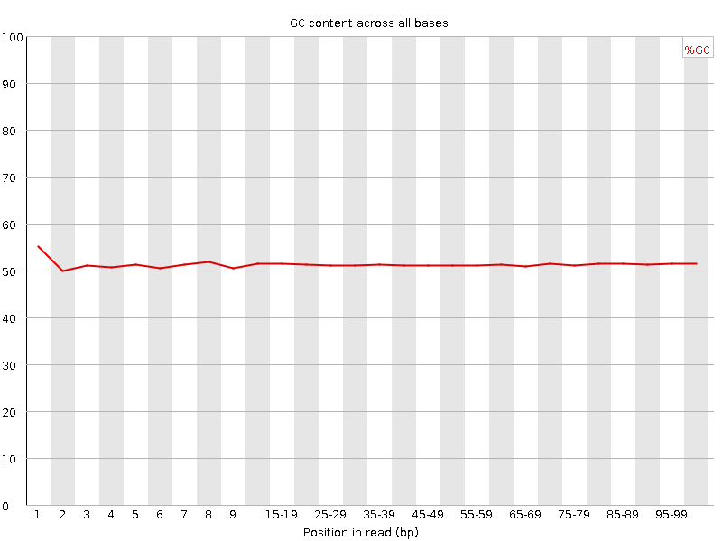

![[OK]](Icons/tick.png) Basic Statistics
Basic Statistics
| Measure | Value |
|---|---|
| Filename | CGRL_index40_R2.fq |
| File type | Conventional base calls |
| Encoding | Sanger / Illumina 1.9 |
| Total Sequences | 22947 |
| Filtered Sequences | 0 |
| Sequence length | 100 |
| %GC | 51 |
Per base sequence quality
Per sequence quality scores
Per base sequence content
Per base GC content

![[WARN]](Icons/warning.png) Per sequence GC content
Per sequence GC content
Per base N content

Sequence Length Distribution
Sequence Duplication Levels
Overrepresented sequences
No overrepresented sequences
Kmer Content
| Sequence | Count | Obs/Exp Overall | Obs/Exp Max | Max Obs/Exp Position |
|---|---|---|---|---|
| GAAGA | 8085 | 3.718787 | 9.268126 | 95-96 |
| AAGAG | 7680 | 3.532503 | 10.48181 | 95-96 |
| GGAAG | 7985 | 3.4050825 | 9.104038 | 95-96 |
| AGATC | 6855 | 3.2857685 | 10.923063 | 95-96 |
| AGAGC | 6130 | 2.717031 | 7.86787 | 95-96 |
| AAAGA | 4850 | 2.4061995 | 5.355423 | 95-96 |
| TTCTT | 4510 | 2.3499298 | 5.0017157 | 5 |
| AGGGA | 5135 | 2.1897426 | 5.830675 | 95-96 |
| GGAAA | 4505 | 2.0721257 | 5.0754027 | 95-96 |
| GATCG | 4635 | 2.0597315 | 7.88831 | 95-96 |
| TCGGA | 4565 | 2.0286243 | 7.9949074 | 95-96 |
| GGGAA | 4690 | 1.9999793 | 5.2169204 | 95-96 |
| CGGAA | 4500 | 1.994558 | 8.293161 | 95-96 |
| ATCGG | 4425 | 1.9664104 | 7.994909 | 95-96 |
| TGTAG | 4150 | 1.91877 | 5.8781686 | 95-96 |
| GTGTA | 3680 | 1.7014632 | 7.6527085 | 95-96 |
| AGCGT | 3340 | 1.484251 | 6.289328 | 95-96 |
| GAGCG | 3605 | 1.4813945 | 5.7172184 | 95-96 |
| GCGTC | 3185 | 1.3639022 | 6.266066 | 95-96 |
| CGTGT | 2745 | 1.22301 | 5.4506607 | 95-96 |
| CGTCG | 2690 | 1.1519297 | 5.2388415 | 95-96 |